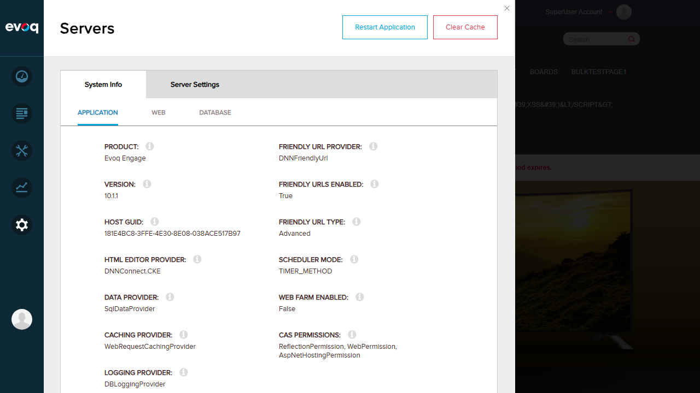
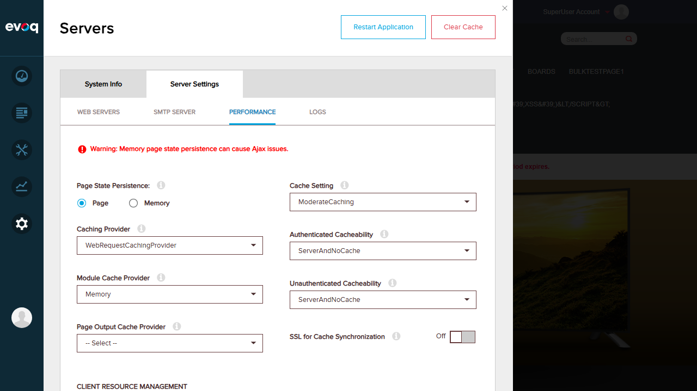

Knockout.js observables (ko.observable, ko.observableArray) successfully provide reactive UI updates. Task times, thread IDs, and status values update automatically without full page refresh.
Test 4: Caching Mechanisms
PASS
What was tested
Verified that the system implements proper caching mechanisms for performance optimization.
Checked Server Settings > Performance tab for cache settings
Confirmed Module Cache Provider: Memory
Verified Cache Setting: ModerateCaching
Checked network requests for CDV (Client Dependency Version) parameter: cdv=132
Observed "Purge Module Cache" scheduled task running every 1 minute
Evidence
Setting
Value
Caching Provider
WebRequestCachingProvider
Module Cache Provider
Memory
Cache Setting
ModerateCaching
Client Host Version (CDV)
132
Authenticated Cacheability
ServerAndNoCache
Purge Module Cache Frequency
Every 1 Minute


Result
Multiple caching mechanisms are properly implemented: WebRequestCachingProvider for general caching, Memory-based module caching, and CDV versioning (cdv=132) for client resource cache busting.
Test 5: Initial Load Time Performance
PASS
What was tested
Measured the initial page load time to verify performance optimization effectiveness.
Steps taken:
Used browser Performance API to measure load metrics
Page load times are excellent (under 200ms), indicating effective performance optimization through caching and lazy loading implementations.
Observations
The following observations were made during testing but could not be directly tested via UI:
Social Tasks Panel Hidden: The code in evoq.js (lines 101-102) explicitly hides the social tasks panel: $tasks.hide(); return; with comment "hide task bar per CONTENT-8436". This means the original tasks panel with 30-second refresh is intentionally disabled in the UI, but the underlying functionality exists in the code.
Silent API Calls: The code uses sf.getsilence() for background API calls that don't display loading indicators, improving perceived performance (tasks.js line 298).
Async Parallel Loading: The code uses utility.asyncParallel() (tasks.js line 358) to load tasks concurrently.
Module Cache Types: The Purge Module Cache task shows three caching providers being purged: FileModuleCachingProvider, MemoryModuleCachingProvider, and DatabaseModuleCachingProvider.
Timer Method Scheduler: The scheduler uses TIMER_METHOD mode, which provides more responsive task execution compared to REQUEST_METHOD.